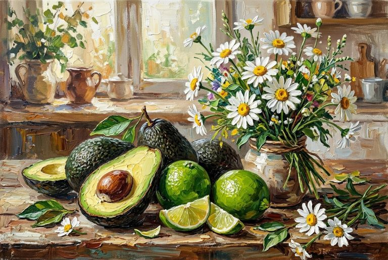
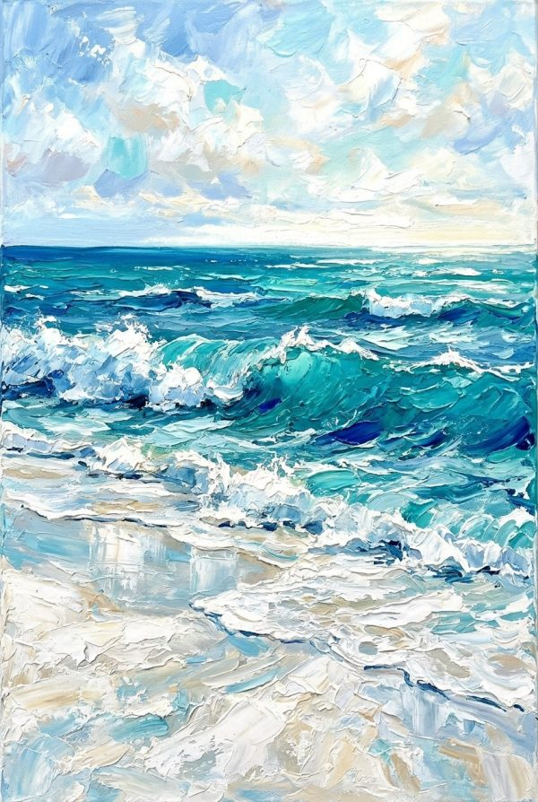
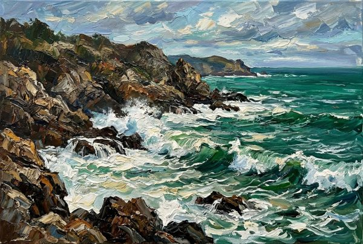

Atelier a Porto Alegre · R. João Guimarães, 31 — Rio Branco
Catalogo › Avocado, limoni e margherite

Collezione Studioai · arte digitale creata con l'IA
Avocado, limoni e margherite
Avocado, limoni e margherite fa parte della collezione Studioai.SilviaPorto di arte digitale creata con l'IA.
Una natura morta dai colori vivaci, ottima per cucine e sale da pranzo.
Commissiona una versione dipinta a mano da Silvia Porto, in acrilico su tela, nella misura che preferisci (tempo minimo 15 giorni lavorativi).
Non c'è vendita online: Silvia concorda con te misura, finitura, prezzo e tempi prima di iniziare a dipingere.
Contatto diretto con Silvia: (51) 99283-8195 · silviabeust1@gmail.com
Provalo
Guarda il quadro sulla tua parete
Scegli un ambiente o carica la foto della tua parete per vedere la misura giusta.
Opere simili

Onde turchesiCollezione Studioai Faro sugli scogliCollezione Studioai
Faro sugli scogliCollezione Studioai Barche da pesca all'albaCollezione Studioai
Barche da pesca all'albaCollezione Studioai Ombrelloni in spiaggiaCollezione Studioai
Ombrelloni in spiaggiaCollezione Studioai Laguna tropicaleCollezione Studioai
Laguna tropicaleCollezione Studioai Gabbiani al tramontoCollezione Studioai
Gabbiani al tramontoCollezione Studioai Passerella tra le duneCollezione Studioai
Passerella tra le duneCollezione Studioai
Costa rocciosa sul mare smeraldoCollezione Studioai© 2026 Silvia Porto — Arti figurative · Porto Alegre, RSCommissioni · WhatsApp (51) 99283-8195 · silviabeust1@gmail.comSviluppato da Diego Kasper - +Quadri